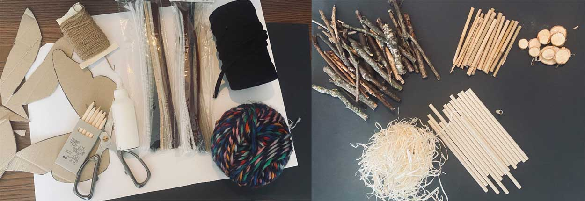
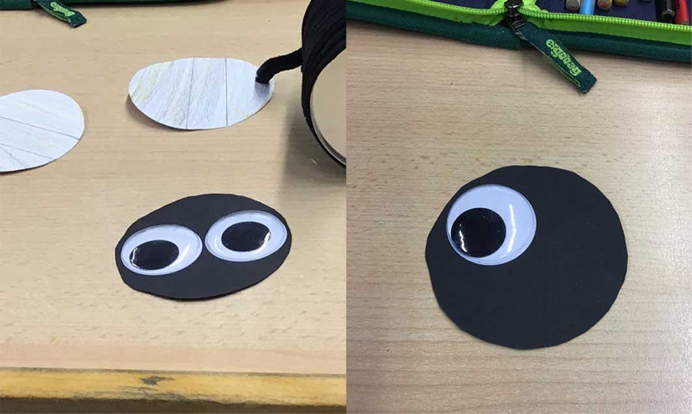
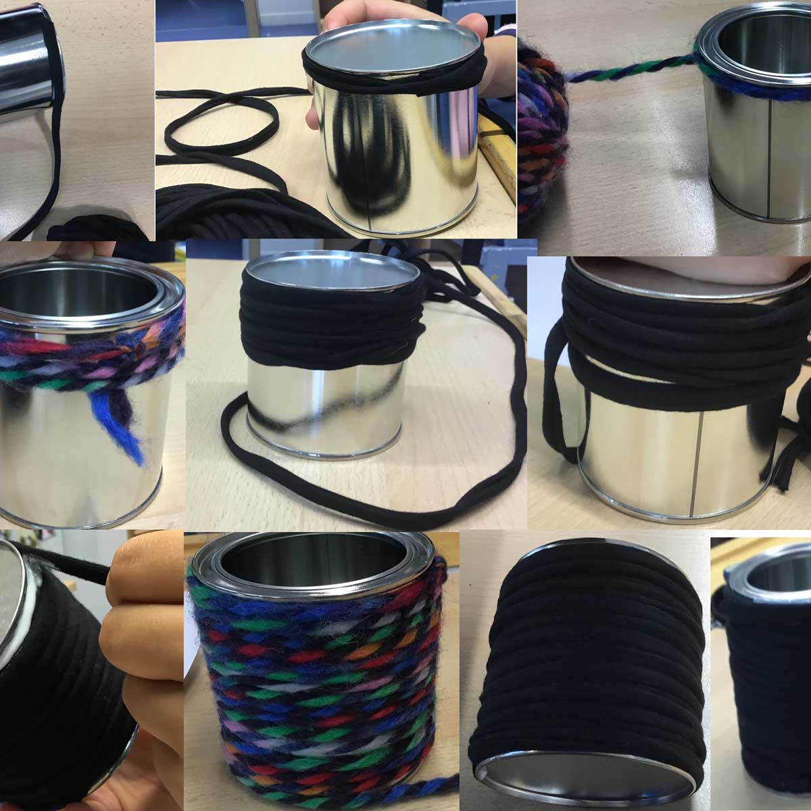
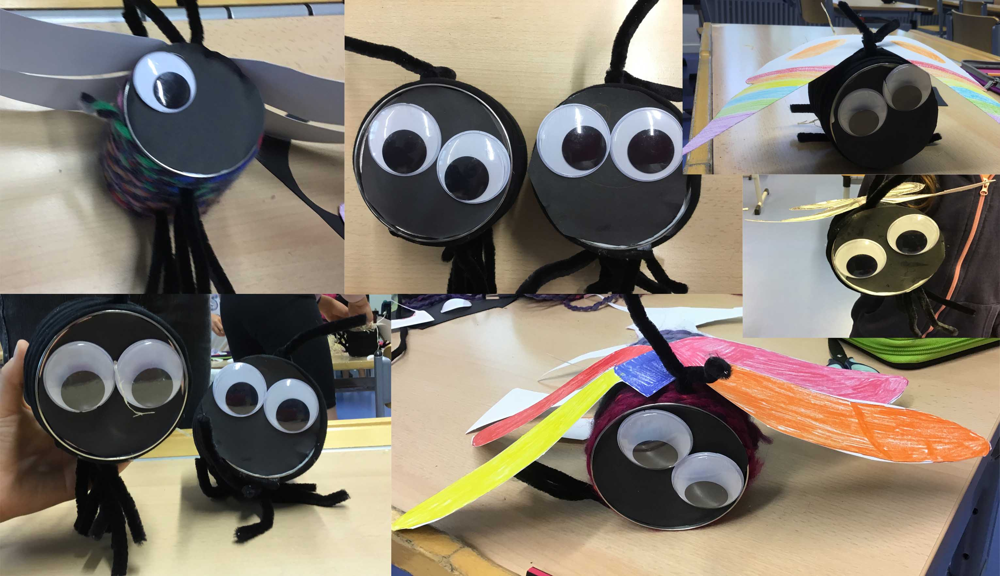
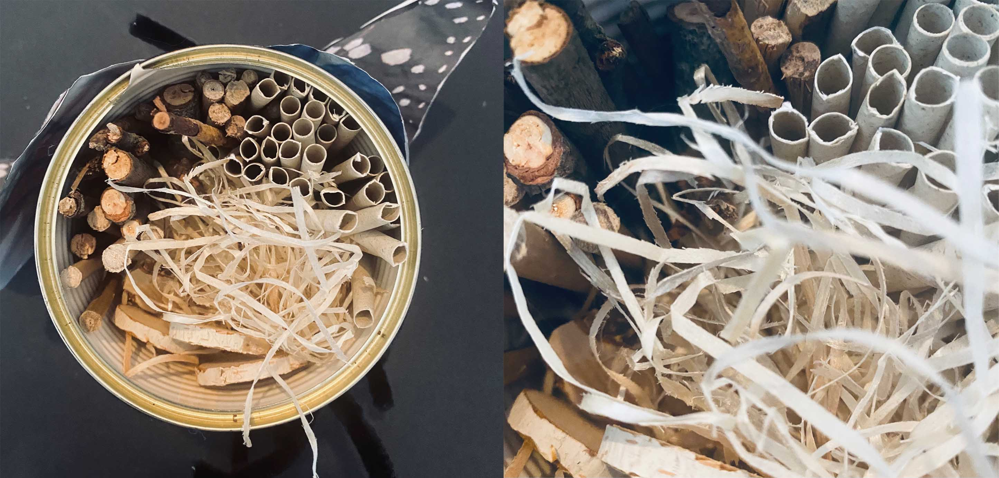

Eine Übernachtungsmöglichkeit für Krabbeltiere
Wusstest du, dass der Bestand von Insekten immer kleiner wird?
Obwohl Insekten unentbehrlich für unser Ökosystem sind, wird der Bestand von den nützlichen Krabbeltieren immer kleiner. Insekten haben viele wichtige Funktionen. So dienen diese unter anderem als Nahrungsquelle für andere Tiere, bestäuben Pflanzen, um auch die Nahrung für uns Menschen zu sichern oder verwerten Pflanzenreste und kontrollieren den eigenen Bestand.
Insekten sind richtige Wundertiere. Um den Insekten einen passenden Unterschlupf zu bieten, haben wir zusammen mit einer Grundschule eine Wohlfühloase für sechsbeinige Krabbeltiere gebaut. Durch den bunten Anstrich sind die Hotels nicht nur nützlich für kleine Krabbler, sondern auch ein kleiner Blickfang. Die Grundschulkinder konnten sich zwischen einem Schmetterling und einer Libelle entscheiden.
Wenn du auch Lust hast - ein Insektenhotel - für deinen Garten, Balkon oder dein Fenster zu basteln, dann leg direkt mit KABU los!

Alles, was du für das Hotel brauchst, ist:
- 1 x Dose
- schwarzer Stoff (für Schmetterlinge), bunter Stoff (für die Libelle)
- Tonpapier (in der Farbe eurer Wahl), weißes Tonpapier für die Libelle
- Schnur (egal, ob dick oder dünn)
- Füllmaterialien (zum Beispiel kleine Stöckchen, Bambus, Papierrollen, Holzwolle, Holzstücke, Tannenzapfen und vieles mehr)
- Pfeifenputzer
- Wackelaugen (die kannst du natürlich auch selbst basteln)
- Kleber, Buntstifte, Schere
Vorsicht bei Konservendosen!
💭 Schild Vorsicht bei Konservendosen!

So wird‘s gemacht:
Schritt 1: Gestalte deine Flügel
Je nach Insekt kannst du die Flügel so gestalten, wie du sie am schönsten findest. Für die Schmetterlings- und Libellenflügel haben einige der Grundschulkinder Vorlagen benutzt und andere die Flügel selbst gestaltet. Male mit Bunt-, Filz- oder Wachsmalstiften die Flügel an. Umso bunter, umso besser!

Schritt 2: Gestalte das Gesicht
Um die perfekte Schablone für das Gesicht deines Insekts zu bekommen, stelle die Dose auf das Tonpapier. Anschließend kannst du die Dose mit einem Bleistift umranden. Der entstandene Kreis hat die perfekte Größe für deine Dose und das Gesicht. Gestalte das Gesicht so, wie es dir am besten gefällt. Die Grundschulkinder haben extra große Wackelaugen benutzt.

Schritt 3: Umwickle die Dose
Umwickle die Dose mit deiner Schnur. Klebe am besten die Schnur direkt am Anfang, in der Mitte und am Ende auf die Dose. Dadurch kannst du viel leichter wickeln.

Schritt 4: Beine und Fühler
Ein Merkmal von Insekten sind ihre sechs Beine und Fühler. Schneide dir drei gleichgroße Pfeifenputzer zu. Achte darauf, dass diese dennoch lang genug sind, um sie in der Mitte zu biegen. Ziehe jetzt die Schnur etwas nach oben und stecke die Pfeifenputzer dazwischen. Zähle noch mal nach, ob dein Insekt sechs Beine hat! Einen kürzeren Pfeifenputzer kannst du mit derselben Technik oben an der Dose anbringen. Jetzt hast du ein Insekt mit sechs Beinen und Fühlern!

Schritt 5: Klebe alles zusammen
Klebe das Gesicht deines Insekts auf die geschlossene Dosenöffnung. Anschließend kannst du die Flügel hinter die Fühler deines Krabbeltiers kleben.

Schritt 6: Aufhänger
Wenn du das Insektenhotel in einen Baum hängen möchtest, kannst du zwei Schnüre (vorne und hinten) um die Dose binden. Wenn du diese zusammen knotest, hast du eine Schlaufe zum Befestigen.
Schritt 7: Befüllen
Je nach Insekt kannst du dein Hotel mit unterschiedlichen Materialien befüllen. Die Grundschulkinder haben sich besonders häufig für viele kleine Stöckchen, Holzwolle und Papierröllchen entschieden. Hier fühlen sich besonders Bienen, Schmetterlinge und Marienkäfer sehr wohl!

Wir wünschen schöne Ferien!
💭 Sprechblase Wir wünschen schöne Ferien!
Die Idee ist inspiriert und angelehnt an „Bunte Nisthilfen: Wir bauen Insekten-Dosen“ von Geolino!
💭 RoboBoard Die Idee ist inspiriert und angelehnt an „Bunte Nisthilfen: Wir bauen Insekten-Dosen“ von Geolino!